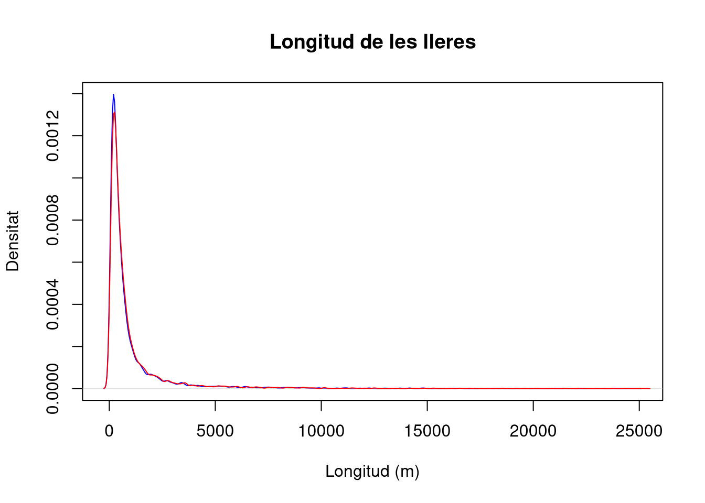
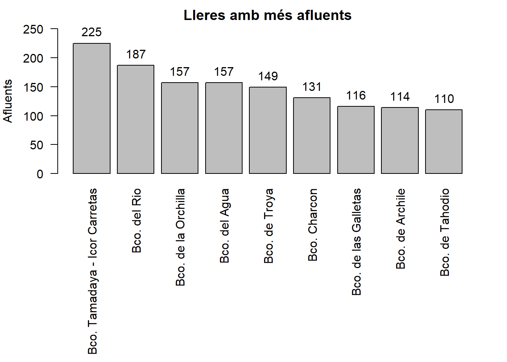
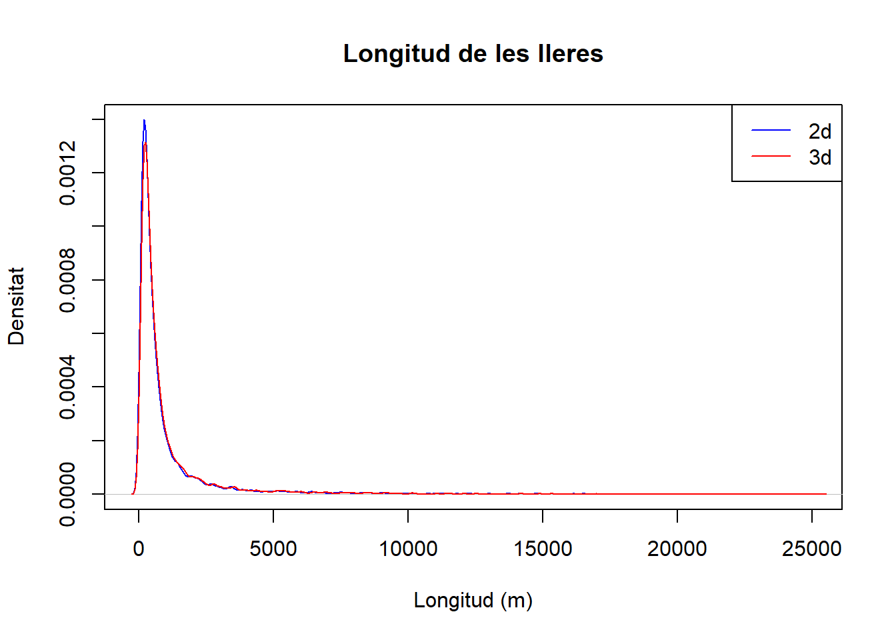
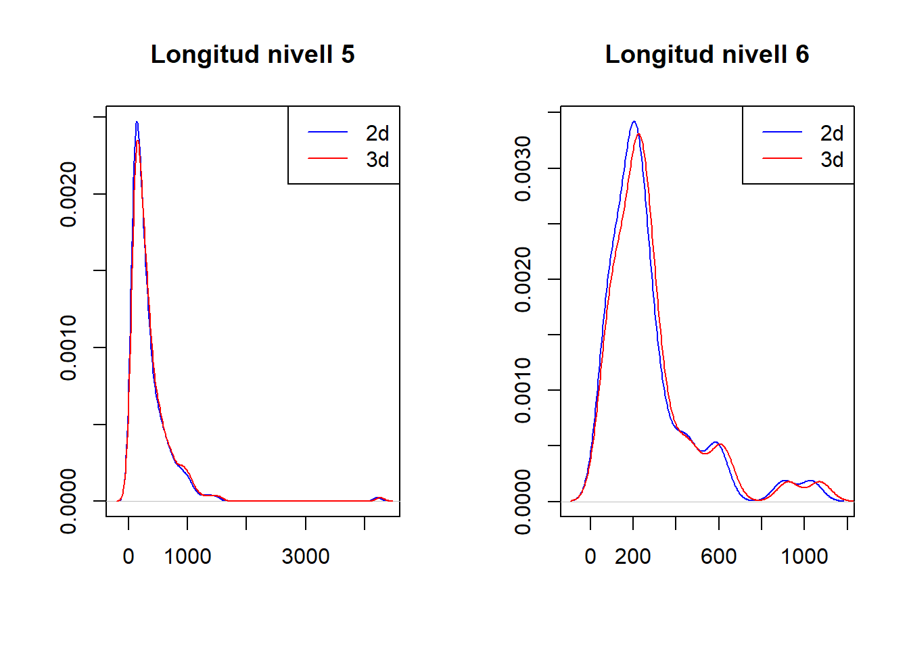
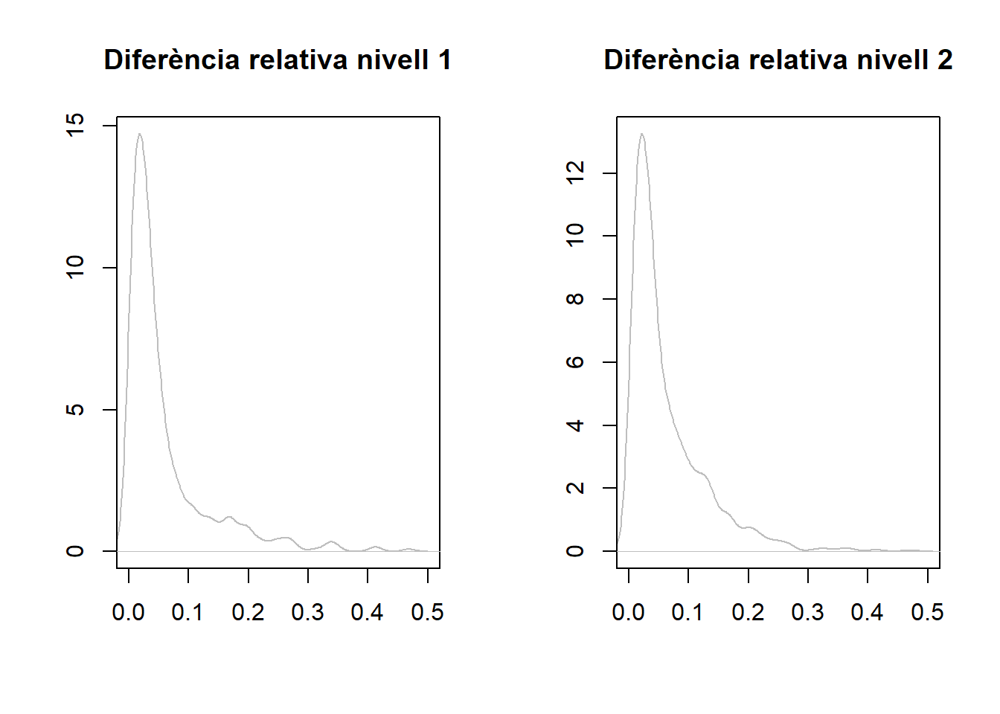

Anàlisi Exploratòria Lleres Tenerife
Introducció i objectiu
blablabla. Idea: comprovar si les longituds 2d i 3d segueixen la mateixa distribució
Anàlisi exploratòria
Càrrega de dades
Carreguem el CSV a R, i comecem comentant les dades que hi apareixen.
rius = read.csv("inventario-insular-de-cauces-de-tenerife.csv")
str(rius)'data.frame': 5497 obs. of 10 variables:
$ cauce_id : int 438 439 440 441 442 443 444 445 446 447 ...
$ cauce_toponimo : chr "El Hervedero" "Hoya Apador" "Cueva los Puyatos" "El Tanquillo" ...
$ cauce_alonimos : chr " " " " " " " " ...
$ cauce_nivel : int 2 2 3 2 1 2 2 1 2 2 ...
$ cauce_orden : chr "13" "12" "121" "11" ...
$ cauce_longitud_2d : int 584 410 282 463 2715 271 364 6382 281 157 ...
$ cauce_longitud_3d : int 622 500 334 503 2872 344 431 6515 289 163 ...
$ cuenca_principal_id: int 237 237 237 237 238 238 238 239 239 239 ...
$ cauce_nombre_phi : chr "FLANDES, BCO. DE" "FLANDES, BCO. DE" "FLANDES, BCO. DE" "FLANDES, BCO. DE" ...
$ cauce_rotulo_phi : chr "Bco. de Flandes" "Bco. de Flandes" "Bco. de Flandes" "Bco. de Flandes" ...Es pot consultar aquesta web per entendre les variables.
Les dades tracten sobre lleres de l’illa de Tenerife. Les variables que es contemplen són les que segueixen:
cauce_id: de tipus qualitatiu, nombre que identifica unívocament cada una de les lleres registrades a l’illa.
cauce_toponimos: de tipus qualitatiu, es refereix al nom donat a la llera.
cacue_alonimos: de tipus qualitatiu, es refereix a una possible variant del nom expressat a la variable anterior per referir-se a la mateixa llera.
cauce_nivel: de tipus ordinal, s’utilitza per identificar i ordenar les diferents bifurcacions d’una mateixa llera segons el grau d’importància. El nivell 1 indica una llera principal, i nivells superiors són afluents dels nivells anteriors.
cauce_orden: de tipus ordinal, s’utilitza per ordenar les afluents d’una llera respecte del nivells anteriors. Un nombre ‘1xy’ de nivell 3 indica que és l’afluent y de l’afluent x de la llera principal. En l’Inventario oficial de cauces de la Demarcación Hidrpgráfica de Tenerife es pot consultar la jerarquia de totes les lleres.
Per exemple, si una llera té nivell 1 vol dir que és un dels rius principals de la conca; si d’un d’aquests torrents de nivell 1 llavors 11, 12, …, 19, 1A són les bifurcacions d’aquella llera. Aquestes poden tenir altres bifurcacions, per exemple 111, 112, … I així inductivament. Notem que la primera xifra sempre sirà 1 perquè comença a un torrent principal sempre. També cal explicar que podem tenir diversos afluents amb el mateix ordre, ja que el que els diferencia és l’id del corrent d’aigua principal (cauce_principal_id). Tots els afluents d’una llera contenen el mateix nom al camp cauce_nombre_phi i cauce_rotulo_phi, de manera que amb aquests camps podem vincular la llera principal amb els seus afluents.
cauce_longitud_2d: de tipus quantitatiu continu, és la mesura de la longitud de la llera en metres si fos mesurat sobre un mapa.
cauce_longitud_3d: de tipus quantitatiu continu, és la mesura de la longitud real del riu tenint en compte l’altitud (mesurat sobre un model digital del terreny).
cuenca_principal_id: de tipus qualitatiu, és un identificador de les conques de l’illa. Totes les lleres que desenboquen en una mateixa conca formen una xarxa.
cauce_nombre_phi: de tipus qualitatiu, és el nom de llera que consta en el PHI (Plan Hidrológico Insular)
cauce_rotulo_phi: de tipus qualitatiu, és el ròtul o nom que s’empra a la pràctica per etiquetar cada llera en el PHI.
Longituds en 2D i en 3D globals
Mostrem la distribució de les longituds en metres en 2D i en 3D superposades en un mateix gràfic.
plot(density(rius$cauce_longitud_2d), col = "blue")
lines(density(rius$cauce_longitud_3d), col = "red")
Com que hi ha molt pocs rius que arribin al quilòmetre de llargària, visualitzarem millor la densitat si ens restringim a aquestes lleres.
sprintf("Rius de menys d'1km (en 2d): %d", sum(rius$cauce_longitud_2d < 1000))[1] "Rius de menys d'1km (en 2d): 4244"plot(density(rius$cauce_longitud_2d), col = "blue", xlim = c(0, 1000))
lines(density(rius$cauce_longitud_3d), col = "red")
Una altra classificació que pot interessar-nos és segons els nivells d’importàcia de les lleres. Podríem plantejar si els tipus de longitud s’avenen millor en les lleres principals respecte a afluents. Visualitzem de nou les distribucions, però a partir dels nivells de classificació.
for(i in 1:max(rius$cauce_nivel)) {
plot(density(subset(rius, cauce_nivel==i)$cauce_longitud_2d), col = "blue", main=paste("Densitat","nivell",i))
lines(density(subset(rius, cauce_nivel==i)$cauce_longitud_3d), col = "red")
}
Vinculant els gràfics anteriors a la pregunta proposada, podem considerar la diferència relativa entre les longituds en cada llera, i visualitzar les densitats d’aquestes diferències per a cada nivell.
rius$diferencia = (rius$cauce_longitud_3d - rius$cauce_longitud_2d)/rius$cauce_longitud_3d
for(i in 1:max(rius$cauce_nivel)) {
plot(density(subset(rius, cauce_nivel==i)$diferencia), col = "grey", main=paste("Densitat","nivell",i), xlim=c(0,0.5))
}

De manera senzilla, podem trobar la mitjana, la desviació típica i la variància dels dos tipus de longitud.
x2=mean(rius$cauce_longitud_2d)
x3=mean(rius$cauce_longitud_3d)
s=paste("Mitjana longitud 2d:", x2," || Mitjana londitud 3d:", x3)
s[1] "Mitjana longitud 2d: 1030.23849372385 || Mitjana londitud 3d: 1074.18701109696"n=nrow(rius)
sd2_2d = var(rius$cauce_longitud_2d)*(n-1)/n
sd2_3d = var(rius$cauce_longitud_3d)*(n-1)/n
s=paste("Variància longitud 2d:", sd2_2d," || Variància londitud 3d:", sd2_3d)
s[1] "Variància longitud 2d: 4094237.83888207 || Variància londitud 3d: 4310444.21570904"sd_2d=sqrt(sd2_2d)
sd_3d=sqrt(sd2_3d)
s=paste("Desviació típica longitud 2d:", sd_2d," || Desviació típica londitud 3d:", sd_3d)
s[1] "Desviació típica longitud 2d: 2023.42230858565 || Desviació típica londitud 3d: 2076.16093203514"Podem fer-nos una idea de si la diferència entre les longituds 2d i 3d registrades és consistent. A partir de les conques principals, considerem l’acumulat de les longituds 2d i 3d de les lleres que hi desenboquen, i visualitzem l’error relatiu (això és $ $) entre dits valors. Entendrem per conques principals aquelles en què hi ha un major nombre de lleres que hi finalitzen.
#Agrupam per nombre de conca, i acumulam valors de longituds
df_2 <- rius %>%
group_by(cuenca_principal_id) %>%
summarise(cauce_longitud_2d=sum(cauce_longitud_2d), cauce_longitud_3d=sum(cauce_longitud_3d), count = n())
#Ens quedam amb les 5 conques amb més lleres
df_2 = df_2[order(df_2$count,decreasing=TRUE, na.last=FALSE),]
df_2=df_2[1:5,]
#Diagrama de barres de la diferència relativa al total de longitud 3d. i.e (3d-2d)/3d
df_2$dif_relativa = ((df_2$cauce_longitud_3d - df_2$cauce_longitud_2d) / df_2$cauce_longitud_3d)
barplot(df_2$dif_relativa, beside = TRUE, names.arg = df_2$cuenca_principal_id,
xlab = 'id Conca', ylab = 'Error relatiu',ylim = c(0,1),
main = 'Diferència relativa de longituds acumulades')
Per apreciar-ho millor, restringim l’eix d’ordenades al valor màxim del gràfic.
barplot(df_2$dif_relativa, beside = TRUE, names.arg = df_2$cuenca_principal_id,
xlab = 'id Conca', ylab = 'Error relatiu',ylim = c(0,max(df_2$dif_relativa)+0.01),
main = 'Diferència relativa de longituds acumulades')
# Create a matrix of the two columns to plot
values <- as.matrix(df_2[, c('cauce_longitud_2d', 'cauce_longitud_3d')])
# Create the barplot
barplot(t(values), beside = TRUE, names.arg = df_2$cuenca_principal_id, col = c('blue', 'red'),
legend = c('Long 2d', 'Long 3d'), xlab = 'id Conca', ylab = 'Acumulat',
main = 'Longituds acumulades per conques')Una informació que pot resultar rellevant és identificar les lleres que tenen més afluents. Podem mostrar en un diagrama de barres les 10 més nombroses.
#Agrupam segons el nom de la llera principal
df_3 <- rius %>%
group_by(cauce_rotulo_phi) %>%
summarise(count = n())
#Eliminam aquelles lleres que no tenen nom (que sempre són lleres principals i no tenen afluents), i ens quedam amb els 10 que en tenen més
df_3 = df_3[order(df_3$count,decreasing=TRUE, na.last=FALSE),]
df_3=df_3[2:10,]
#Ho mostram en un gràfic
par(mar = c(13, 4, 2, 2))
bp = barplot(df_3$count, beside = TRUE, names.arg = df_3$cauce_rotulo_phi, las=2, ylab = 'Afluents',
main = 'Lleres amb més afluents', ylim=c(0,max(df_3$count)+25))
text(bp, df_3$count, df_3$count, pos = 3, xpd = NA)
Per seguir comparant el dos tipus de longituts, el que farem serà agafarles 5 lleres amb més afluents, i veure la relació d’aquestes dues longituts.
freqüències=table(rius$cuenca_principal_id)
freqüències_ordenades=sort(freqüències,decreasing = TRUE)
top_5_rius=head(freqüències_ordenades,5)
top_5_rius #Aquests són els idprincipals dels rius amb més afluents.
275 8 367 9 409
225 157 157 149 131 suma_long2d = 0